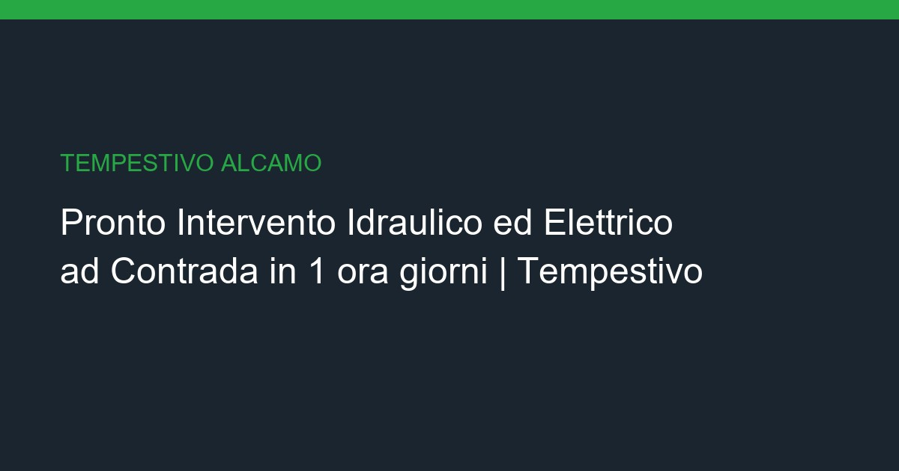

Pronto Intervento Idraulico ed Elettrico a Contrada: Chiavi in Mano in 1 ora giorni

Pronto Intervento Idraulico ed Elettrico a Contrada: Intervento urgente per guasti elettrici e idraulici, disponibile H24.
📌 In sintesi
- ✓ Sopralluogo gratuito entro 24/48h
- ✓ Preventivo dettagliato e trasparente
- ✓ Tempi certi contrattualizzati (1 ora giorni)
- ✓ Garanzia su tutti i lavori eseguiti
Caratteristiche del servizio
| Caratteristica | Dettaglio |
|---|---|
| Servizio | Pronto Intervento Idraulico ed Elettrico chiavi in mano a Contrada |
| Prezzo | A partire da €50 a €300 |
| Durata | 1 ora giorni |
| Zona | Contrada, Zone Periferiche, Aree Campagna (Alcamo) |
| Vincoli | Normative edilizie per zone agricole e periferiche |
| Materiali | Materiali di emergenza, raccordi, fusibili, morsetti |
| Garanzia | 2 anni su riparazioni |
💶 Prezzi Dettagliati
| Voce | Prezzo |
|---|---|
| Intervento urgente elettrico | Da €50 |
| Intervento urgente idraulico | Da €60 |
| Messa in sicurezza impianto | Da €80 |
Le problematiche specifiche di Contrada
- ✓ Isolamento termico
- ✓ Scarichi autonomi
- ✓ Recinzioni e cancelli
- ✓ Adeguamento impianti elettrici
- ✓ Riparazione tetti
- ✓ Logistica periferica
Nota: Operiamo tenendo conto di Normative edilizie per zone agricole e periferiche.
Iter Operativo per Pronto Intervento Idraulico ed Elettrico a Contrada
Aree periferiche con case isolate che richiedono autonomia impiantistica e interventi completi.
Per garantire un risultato impeccabile e senza intoppi nell'area di Contrada, adottiamo un processo collaudato che azzera gli imprevisti e ottimizza le tempistiche:
- Sopralluogo tecnico sul posto: Un nostro responsabile si reca a Contrada per analizzare lo stato di fatto, rilievi metrici e verificare accessibilità e vincoli della zona.
- Pianificazione e Preventivo Definitivo: Invio di una proposta chiara con specifica dettagliata delle lavorazioni, materiali scelti e costi trasparenti senza sorprese finali.
- Verifica Inquadramento ed Edilizia Libera: L'intervento di pronto intervento idraulico ed elettrico rientra nelle attività di edilizia libera e manutenzione ordinaria/urgente. Non richiede la presentazione di pratiche burocratiche complesse (CILA/SCIA), garantendo un avvio immediato dei lavori a Contrada nel pieno rispetto dei regolamenti locali.
- Esecuzione Lavori e Direzione Cantiere: Attuazione degli interventi con maestranze qualificate sotto la costante supervisione del nostro Project Manager dedicato.
- Collaudo, Pulizia e Consegna: Verifica finale del perfetto funzionamento di impianti e finiture, pulizia profonda dell'immobile e rilascio di garanzia ufficiale.
Materiali e Tecnologie Adottate
La nostra soluzione per Pronto Intervento Idraulico ed Elettrico
La scelta delle materie prime è fondamentale per garantire la longevità dell'intervento, specialmente in un contesto costiero come Contrada. Impieghiamo esclusivamente materiali certificati, ecocompatibili e altamente resistenti all'usura e agli agenti atmosferici locali. I nostri impianti sono conformi alle normative europee di risparmio energetico e sicurezza, assicurando la massima efficienza termica e acustica per il tuo immobile.
Il nostro approccio integrato per Pronto Intervento Idraulico ed Elettrico unisce competenze di progettazione, impiantistica e finitura edile. Ascoltiamo le tue esigenze stilistiche e funzionali per realizzare una soluzione personalizzata a Contrada, coordinando ogni singola fase fino al completamento dell'opera nei tempi prestabiliti.
A partire da €50 a €300 | ⏱️ Tempi stimati: 1 ora giorni
Trasparenza, Sicurezza e Normative
Perché sceglierci a Contrada
Ogni intervento svolto a Contrada viene eseguito nel rigoroso rispetto delle normative vigenti in materia di sicurezza sui luoghi di lavoro e smaltimento rifiuti edili. Rilasciamo tutte le certificazioni di conformità per gli impianti realizzati, consentendoti di accedere alle detrazioni fiscali e ai bonus ristrutturazione disponibili in Sicilia per l'anno in corso.
Con centinaia di cantieri portati a termine tra Alcamo e la provincia di Trapani, Tempestivo rappresenta un punto di riferimento per chi cerca serietà, rispetto dei tempi e costi certi. Il nostro unico punto di contatto evita dispersioni di responsabilità, offrendo un servizio veramente completo e garantito.
Recensioni Clienti per Pronto Intervento Idraulico ed Elettrico a Contrada
Domande Frequenti
"Tetto e impianti rifatti in modo impeccabile." - Pietro S., Contrada ⭐⭐⭐⭐⭐
Intervenite anche nelle contrade più distanti?
Sì, copriamo tutte le aree periferiche con la stessa efficienza.
Servizi Correlati
- → Ristrutturazione Bagno a Contrada
- → Ristrutturazione Cucina a Contrada
- → Ristrutturazione Completa a Contrada
- → Imbiancatura a Contrada
- → Elettricista e Impianti Elettrici a Contrada
- → Idraulico e Impianti Idrici a Contrada
- → Pronto Intervento Idraulico Elettrico a Centro Storico
- → Pronto Intervento Idraulico Elettrico a San Francesco
- → Pronto Intervento Idraulico Elettrico a Borgo
- → Bonus Ristrutturazioni Sicilia
- → Guida Ristrutturazione Bagno
- → Servizi_Alcamo